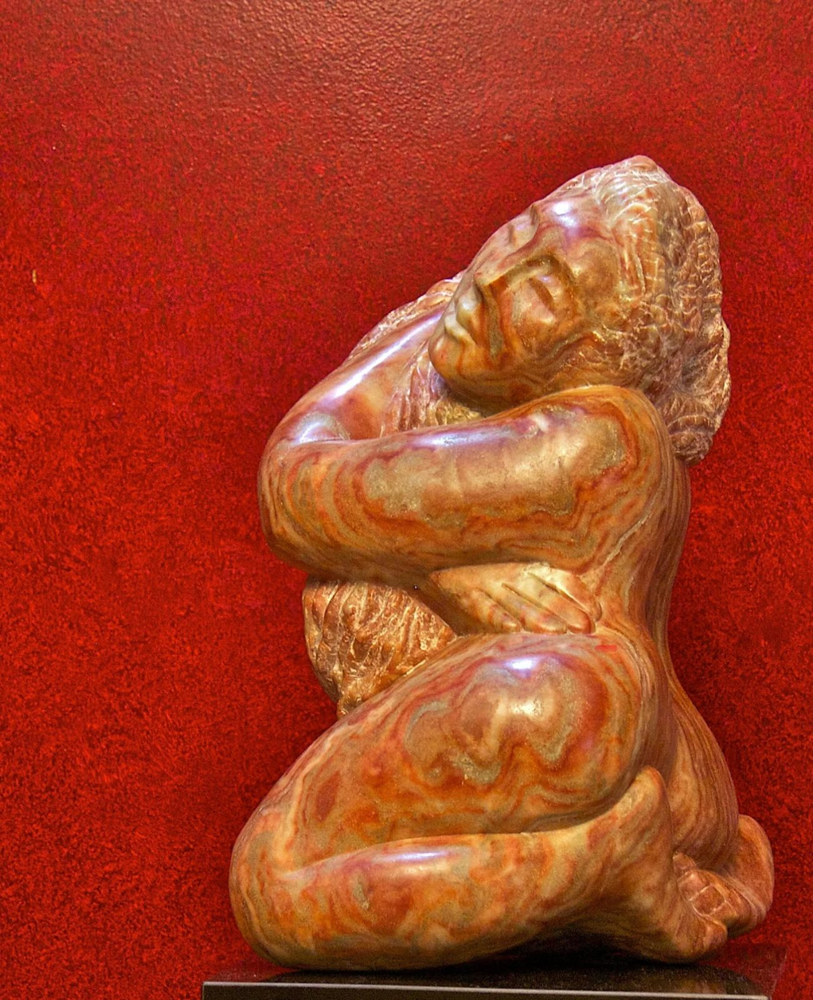
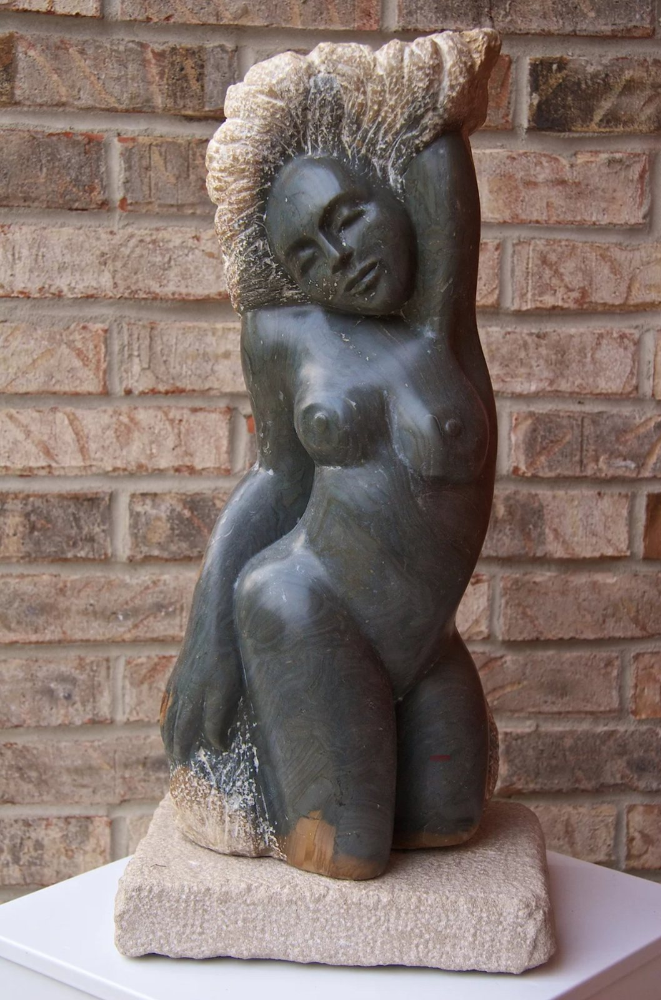

Art with intensity, whimsy, and a divine sense of humor.
New Jersey artist Jacqui Melman creates dynamic works of art in stone, paint, and mixed media — and teaches the craft of stone carving at her studio in Manalapan, NJ.

Three ways into one vision
From classical stonework to oversized canvases, every medium carries the same unmistakable sense of color, abstraction, and life.
Sculpture
Inspired by modernism and the stonework of José de Creeft, Jacqui's carving is the most classical thread of her practice — patient, direct, and alive.
See the sculpture →Painting
Bold, oversized canvases shaped by cubists like Max Weber and Georges Braque, with the color sense of a lifelong student of the palette.
See the paintings →Pastels & Drawings
Expressive works on paper where intensity meets whimsy — the freest, most immediate expression of a restless imagination.
See the pastels →
A school for aspiring sculptors in Manalapan, NJ
After studying stone carving for the better part of a decade under renowned artist Elaine Warshaw, Jacqui opened her own school for aspiring sculptors. Students of every level learn to read the stone, handle the tools, and discover the form waiting inside.
Classes are small, hands-on, and welcoming to complete beginners.
About the LessonsBring a piece home — or make your own.
Inquire about available works, commissions, or a seat in the next stone carving class.